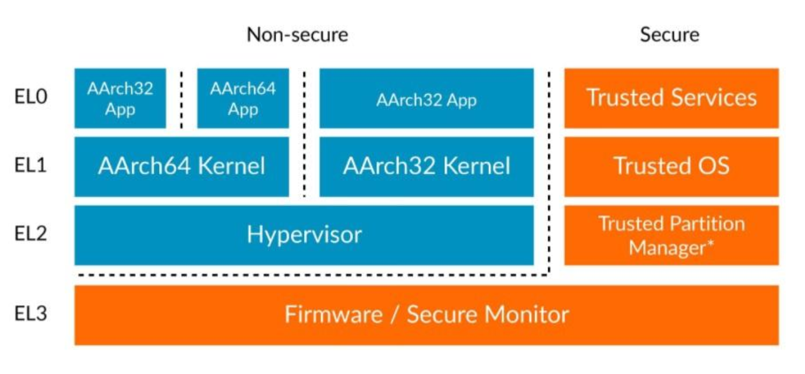
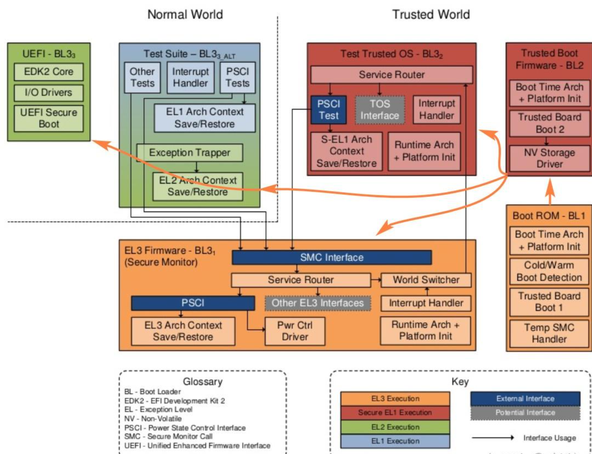
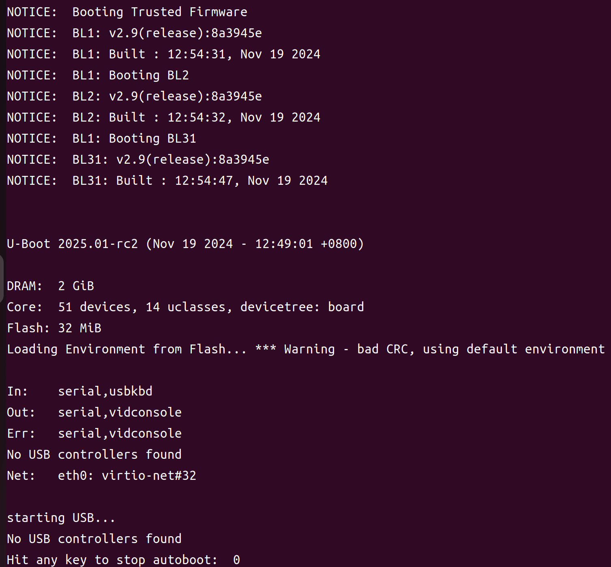
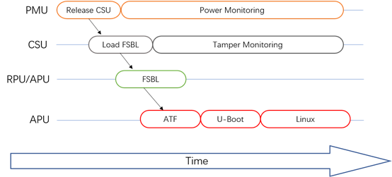
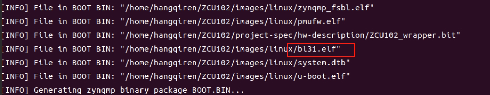

ARM-Trusted-Firmware 学习
前言
在 ARMv8 之后，Uboot 在启动前需要先进行 ATF 的初始化，为了充分了解启动过程，对 ATF 进行了一波学习，总结在此篇文章中。
ATF 概念
安全是操作系统领域这些年经常提到的话题，TF（Trusted Firmware）是 ARM 为了提升安全在 ARMv8 引入的安全解决方案，其包括了启动和运行过程中的特权级划分。由于 TF 是 ARM 引入，所以也叫 ATF，其实现上有两种 Profile，对 arm-a 系列的 TF-A，对 arm-m 系列的 TF-M，由于 a 系列使用较多的原因经常不区分 ATF 和 TF-A。
其作用是细化了特权级，帮助进行安全侧与非安全侧的切换，如下图所示，EL3 即为 ATF 的一部分。

在实现上，EL0 和 EL1 是 ATF 必须实现的，EL2 和 EL3 可选。EL0-EL2 每一个层次又可以分为安全和非安全两部分，EL3 只有安全模式一种。
ATF 的作用是建立一套从启动到执行的信任链，借此提高 ARM 架构的安全性。
ATF 功能
过去的 ATF 只是为了电源管理，以及 Trust_zone 的切换，现在随着技术的不断发展，功能愈发庞大，现如今 ATF 的重要功能有：
- 安全世界的初始化（BL32）
- CPU rest
- 系统设备的驱动，例如 GIC
- SMC 处理。
- PSCI 库的支持。
- Secure monitor 代码。
- Secure Boot 实现
ATF 启动流程

其整体流程如上，接下来逐个说明。
BL1
BL1,又名 Trusted Boot ROM,是放在 ROM 中的一段程序，是信任链建立的信任根，其目的是建立 Trusted SRAM（为运行 C 程序作堆栈准备），异常向量表，初始化 Console。找到并验证 BL2（验 CSF 头），然后汇编跳转到 BL2。
BL2
BL2，又名 Trusted Boot FIrmware，其运行在 Flash 中，可信建立在 BL1 对其的验证上。其完成很多硬件的初始化。
其负责加载所有 BL3n 的 Images，例如 BL31,BL32,BL33。
最后会验证 BL31，然后跳转到 BL31。
但如何跳转是不同于 BL1 的，这里区分了 BL2 是否在 EL3 运行，如果在 EL3 运行，则由 BL2 跳转 BL31，如果不是，则 BL2 将会发起 SMC 中断，其由 BL1 异常向量表接收后进行汇编跳转。
也由此，我们可以明确 GIC 初始化大概率在 BL2 完成。
1 | #if !BL2_RUNS_AT_EL3 |
BL31
BL31，又名 EL3 Runtime Firmware，其区别于 BL1 和 BL2 的一次性运行，其运行后将持续服务在 EL3，办法自通过 SMC 为 Non-Secure 提供服务。
其会初始化所有服务，如果初始化的服务中有 BL32 相关，则会验证并跳转到 BL32 初始化 TEE OS。最后在由 TEE OS 恢复 CPU 到 BL31，让其验证并进行 BL33 的初始化，由于 BL32 是可选的，所以如果没有实现 BL32，BL31 会转而立刻验证并进行 BL33 的初始化。
BL32
BL32，其实是 Open Protable Trusted Execution Enveironment OS + APP,该 OS 运行在 SEL-1,其上的安全程序运行在 SEL-0。TEE OS 运行完毕后，会通过 SMC 中断，返回到 BL31。
BL33
BL33，又名 Non-Trusted Firmware，其实就是 Uboot 或者 UEFI firmware。之后的信任由这些 Bootloader 完成。例如 UEFI SECURE BOOT。
到了 BL33，就和正常的启动差不多了，通过 Uboot 或者 UEFI 加载操作系统镜像进来启动。
总结
下图给出了 ATF 更多的细节：

正因为这样的 Firmware 的引入，我们需要在编译 ATF 前就要指定好系统硬件，例如 GIC 的版本等等，否则启动将会遇到问题。
验证
Bao-demo 为上述提供了一种 QEMU 的验证方法，其可以编译出一个 ATF + Uboot 的 Flash.bin 文件在 QEMU 中执行。
下图是笔者尝试使用 GICV2 架构后的结果：

QEMU 启动命令如下：
1 | qemu-system-aarch64 -machine virt,secure=on,gic-version=2,virtualization=on -cpu cortex-a53 -smp 4 -m 2G -nographic -bios flash.bin |
根据信息可以看出，启动流程和上文所述相同，BL1 启动 BL2，BL2 发送 SMC 让 BL1 启动 BL31，由于 BL32 没有实现，所以BL31 启动了 BL33，即 Uboot。
UltraScale+ 的启动

和一般嵌入式开发板不同，启动顺序是
BOOTROM—>FSBL—>ATF—>optee—>uboot->linux, FSBL 已经将所有镜像加载到内存。
因此，无需进行 BL1,BL2 加载镜像的过程，直接从 BL31 开始启动。
这也就是为什么，在制作 UltraScale+ 板子的启动镜像时，没有 BL1 和 BL2 的原因。
